Intermezzo - Evaluating the end results
If you want to just upload a fully completed lab result to see what the final dashboard looks
like without completing the lab work, just apply the file found in
support/dashboard-lab5.json in the
Perses Easy Install project
. It's a resource defining a dashboard as worked out in this lab and can be applied as
follows:
$ ./support/bin/percli apply -f support/dashboard-lab5.json
object "Dashboard" "MyFirstDashboard"
has been applied in the
project "workshopproject"
First dashboard - Opening the starting dashboard
Click on the listing
MyFirstDashboard, which gets us to the starting point
for the next lab (note we've set the time span to be the LAST 15 MINUTES at the top due to
the short running time of our Prometheus instance):
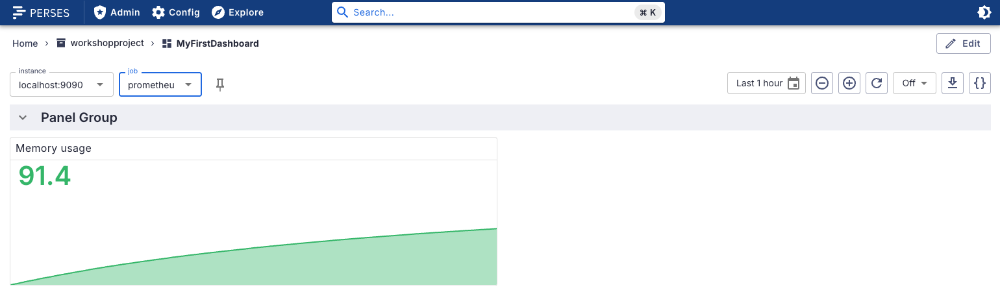
First dashboard - About the instance variable list
You will find at the top a drop-down menu that contains all the instance values we can target
in our queries. This is how variables are defined and this is a list of
instance values we can then use with a variable in our queries (more on this
later). Default is localhost:9090:
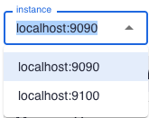
First dashboard - About the jobs variable list
A second variable list at the top is shown as a drop-down menu containing all the job values we
can target in our queries. This is how variables are defined and this is a list of
job values we can then use with a variable in our queries (more on this
later). Default is prometheus:
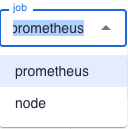
First dashboard - Variable choices matter
The initial dashboard view works with a stat chart
Memory usage that has
a backing PromQL query using the variables instance and
job, both filled by the choices you make in the drop-down menus at the top
of this dashboard:
First dashboard - Changing job variable matters
Changing them matters, for example, change
job to node
and notice that this results in no data being returned. This is because this job does not exist
for the instance value of localhost:9090:
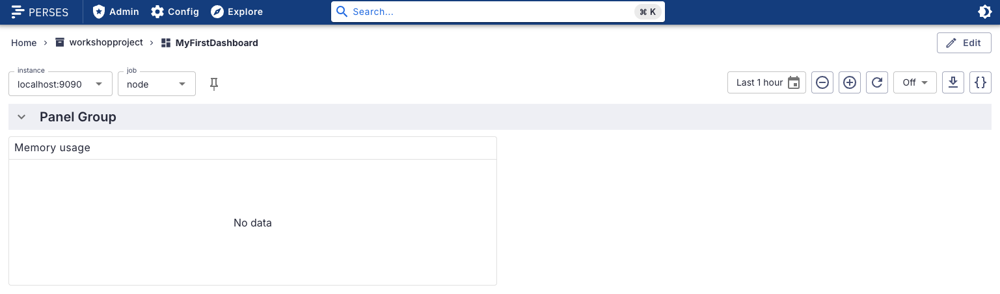
First dashboard - Working variable combinations
For these specific combinations of
instance and job
values, you will have data returned and a working stat chart (below the combinations are
presented):- localhost:9090 + prometheus
- localhost:9100 + node
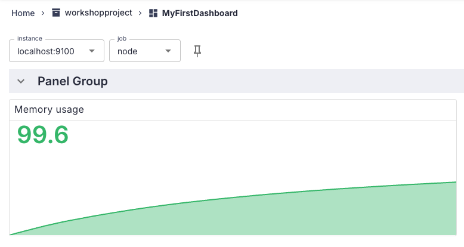
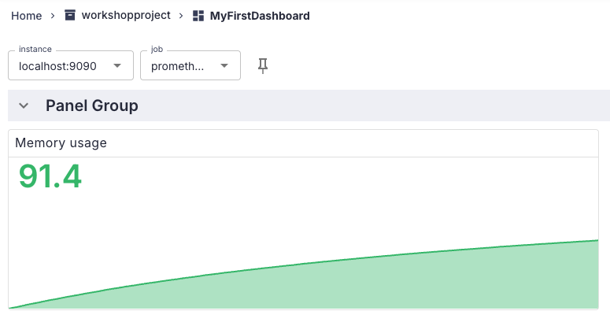
First dashboard - Modifying existing dashboard
Now on to the work at hand, first resetting your dashboard as shown below. You're going to edit
the stat chart
Memory usage, removing the graph being displayed, adjusting
the displayed numbers, and resize the stat chart to make room for more panels later:
First dashboard - Opening dashboard for editing
First, open the current dashboard for editing by clicking on the
EDIT button
on the top right:
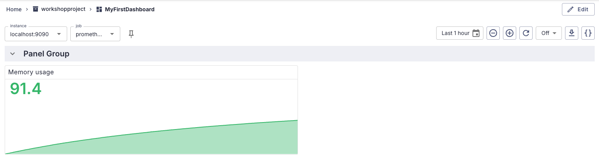
First dashboard - Renaming a panel group
Notice all the pencil icons that are now available to edit all parts of the dashboard? Let's
rename the first and only panel group from
Panel Group to
My First Row. Click on the PENCIL ICON found on the far
right of the Panel Group to edit:
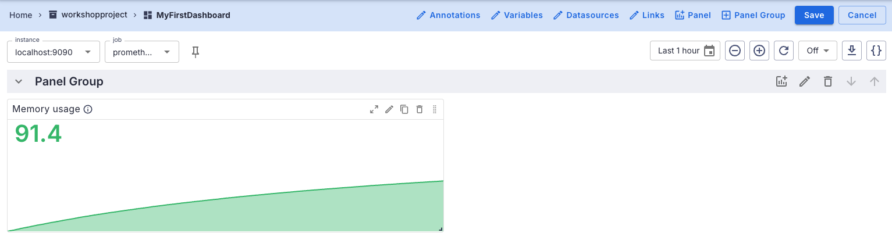
First dashboard - Panel group pop-up
Modify in the
EDIT PANEL GROUP pop-up as shown. Note the
Collapse State can be open or closed, which refers to the display
desired when the dashboard is initially opened. We'll ignore the Repeat Variable
field for now. Click on APPLY button to complete your modifications:
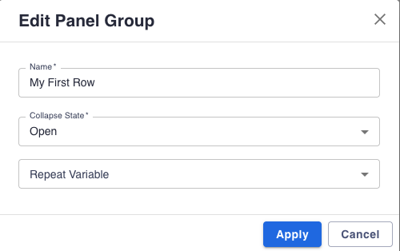
First dashboard - Always saving dashboard changes
It is very important to note here that all changes will be applied, and you see the first row
has been renamed. Did you also notice that the dashboard is still in
EDIT
mode with pencil icons available? Nothing has been finalized until you save your changes, so
get in the habit of doing that by clicking on the SAVE button on the top
right (and accept the pop-up suggestion to save current 15m time range as default):
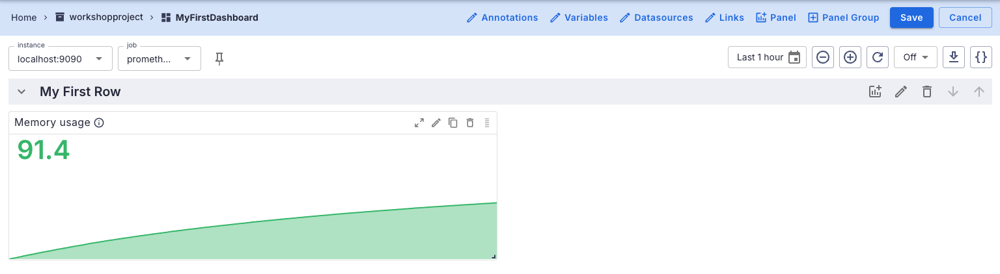
First dashboard - After saving dashboard changes
After saving your changes, the pencil icons are gone, and you are ready to move on to the next
change you want to make. Get in the habit of saving each change you make to a dashboard as you
work, you'll be happier for it:
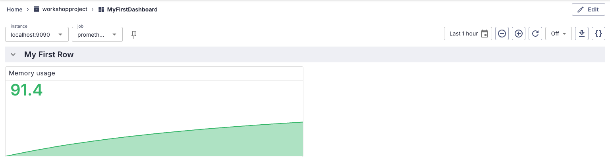
First dashboard - Modifying memory usage panel
Now let's tackle the changes you want in the
Memory usage panel by opening the
dashboard for editing, then clicking on the PENCIL ICON found on the
Memory usage panel to open the graphical EDIT PANEL
pop-up:
First dashboard - Modifying the panel name
At the top you find
Name, Group, Description,
and Type fields. Modify the name to Memory Usage noting
the PREVIEW section updates as you type:
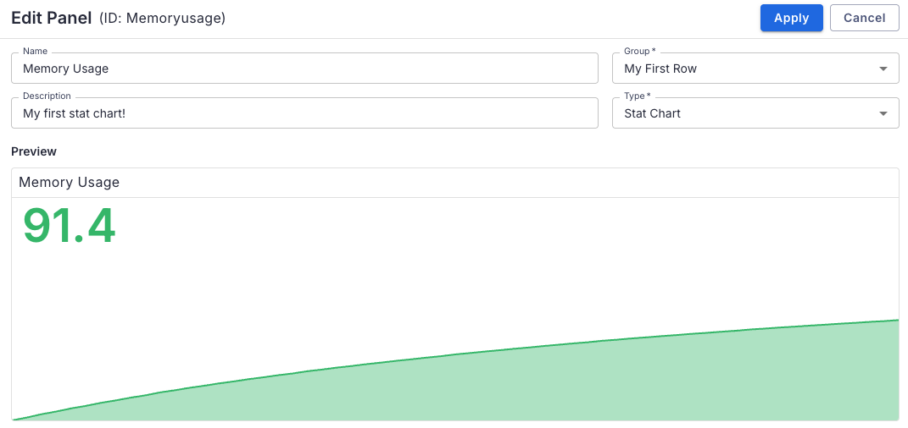
First dashboard - Exploring the panel query
Scroll down, and you'll find the
QUERY section and several more tabs with
SETTINGS, VALUE MAPPING, LINKS,
and JSON:
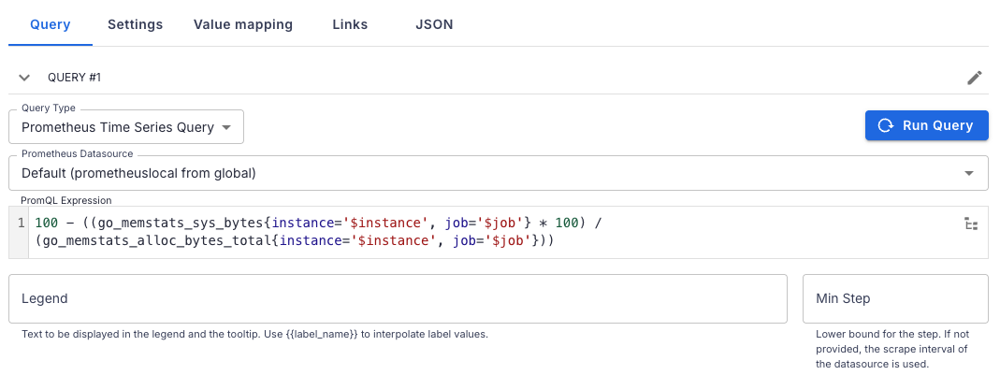
Intermezzo - The panel query...
Data is gathered for a panel using the
PromQL query shown here, it's used to
gather the metrics data needed for this stat chart. You will be provided with more working queries
to use when creating dashboards in this workshop, all without explanation. These target the
specific data that was scraped from the data sources specified in this project.
100 - ((go_memstats_sys_bytes{instance='$instance', job='$job'} * 100) /
(go_memstats_alloc_bytes_total{instance='$instance', job='$job'}))
If you want to learn more about these
PromQL queries, please try out the
Getting started with Prometheus
workshop which has specific labs dedicated to this topic.
First dashboard - Removing sparkline in settings
Click on the
SETTINGS tab to open this view showing details on how this stat
chart is displayed. Let's remove the graph by turning off the SPARKLINE
switch, removing the graph. The preview updates to this view:
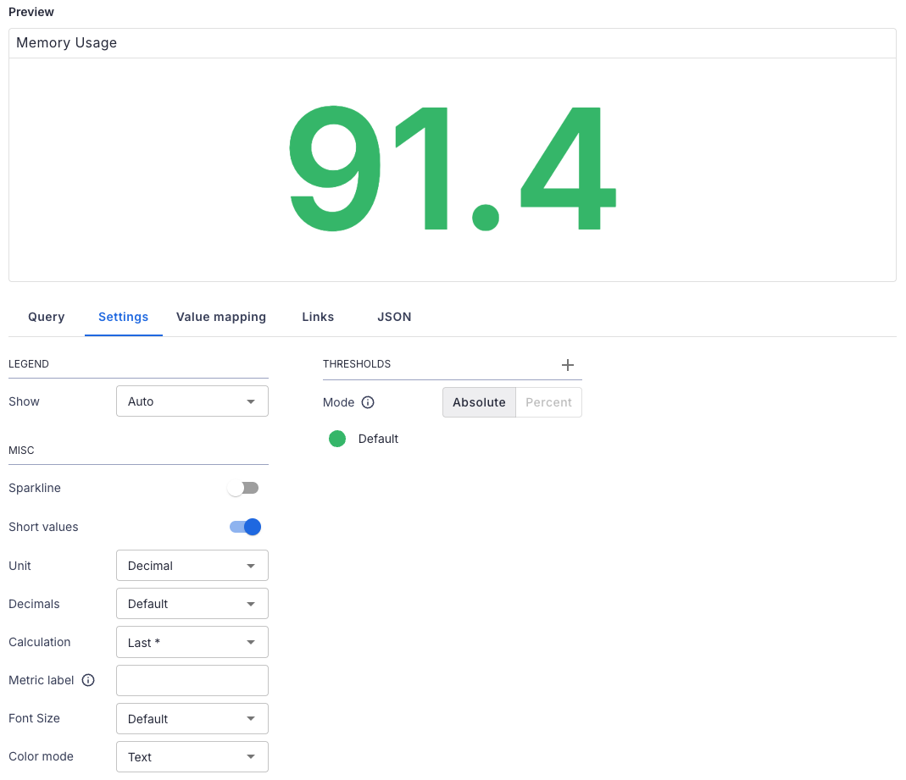
First dashboard - Adjusting font in settings
Now the numeric value is way too big! Let's reduce that to take up less space in our dashboard
using the
FONT SIZE drop down menu and select size 28, resulting in this
preview:
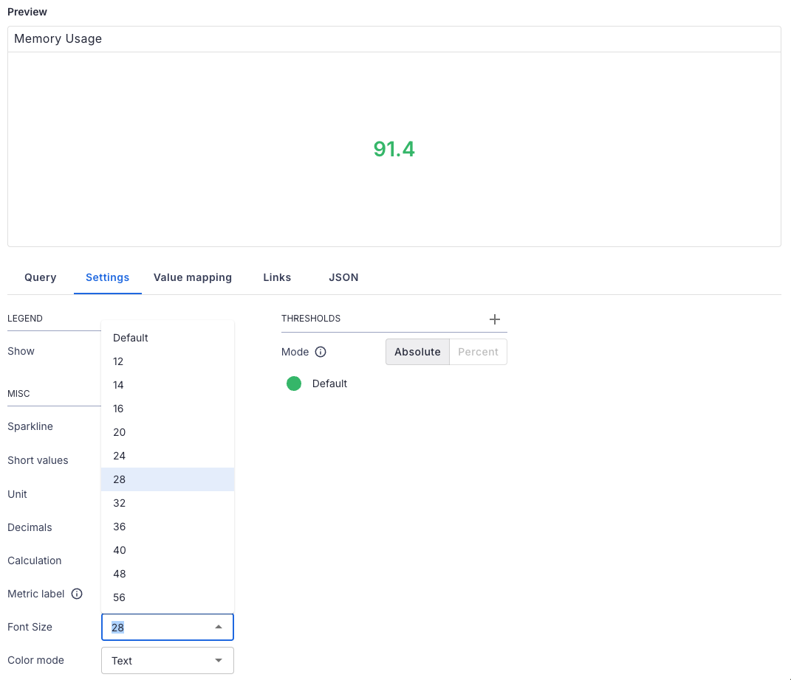
First dashboard - Adding links
Open the
LINKS tab and click on the '+' to add an entry. This will be a link
from the Memory Usage stat chart directly to the website being monitored, so we enter the details
of the site we are monitoring (fill in any valid URL you like). Note the 'open in new tab' button
on the resulting preview:
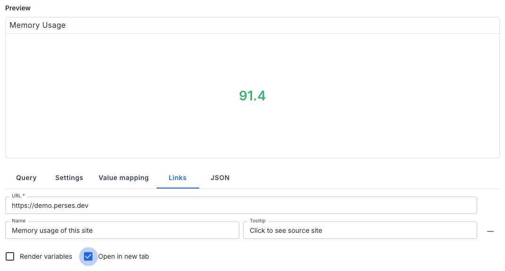
First dashboard - Applying panel changes
To see all of our changes in this panel, just click on the
APPLY button on
the top right, and you are dropped back to the dashboard to preview your changes (they are
not saved to the dashboard yet!):
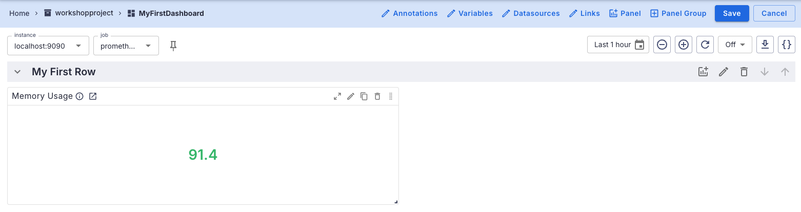
First dashboard - Resizing memory usage panel
The memory usage panel is taking up too much space for the percentage number it's displaying.
Let's grab the bottom right and drag it up to the left to resize (mouse click and hold the
panel corner, then drag). When finished it should look something like this:
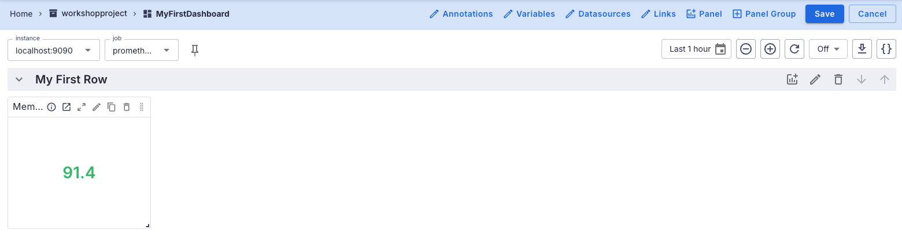
First dashboard - Saving dashboard changes
Now you can
SAVE this change. This is done by clicking the
SAVE button found on the top right. Note the edit buttons are gone:
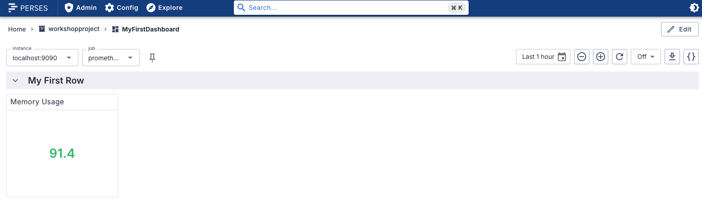
First dashboard - Viewing the details
If you hover with your mouse on the memory usage components, you get an informational popup with
the message shown. This was the text you saw in the
DESCRIPTION field in
the EDIT PANEL. Hover on the LINKS icon and note clicking
opens a new tab with the monitored website:
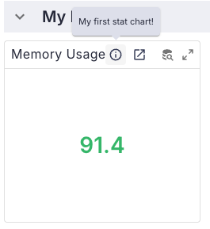
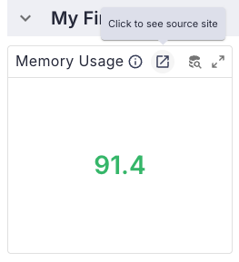
First dashboard - Creating total memory panel
You've explored an existing panel and modified the layout and presentation of the
Memory Usage stat chart. Now it's time to create one from scratch, to
capture and display Total Memory consumption. Start by opening the dashboard
for editing with EDIT button in top right:
First dashboard - Which new panel button?
You'll notice there are two options presented as buttons to add a new panel. One is part of the
top menu and allows you to add a panel to any available group, the other is part of the header
menus for group
My First Row and will add a panel configured to appear in
this group:
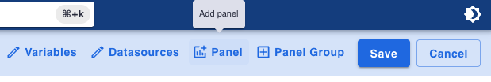
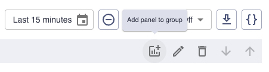
First dashboard - Adding new panel details
Click on the add panel menu in the header for the group
My First Row and
start filling in the Add Panel details as shown:
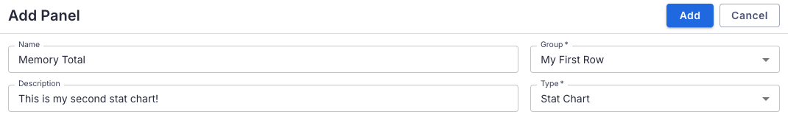
First dashboard - Adding new panel query
Scroll down and in the first query field add the following PromQL query:
go_memstats_alloc_bytes_total{instance='$instance', job='$job'}
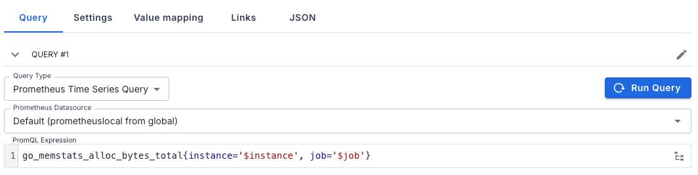
First dashboard - Previewing new panel query
Click on the
RUN QUERY button and notice the preview is a graph of the total
memory used in bytes, but we want this to be a number, not a graph, so click on the tab
SETTINGS under the graph:
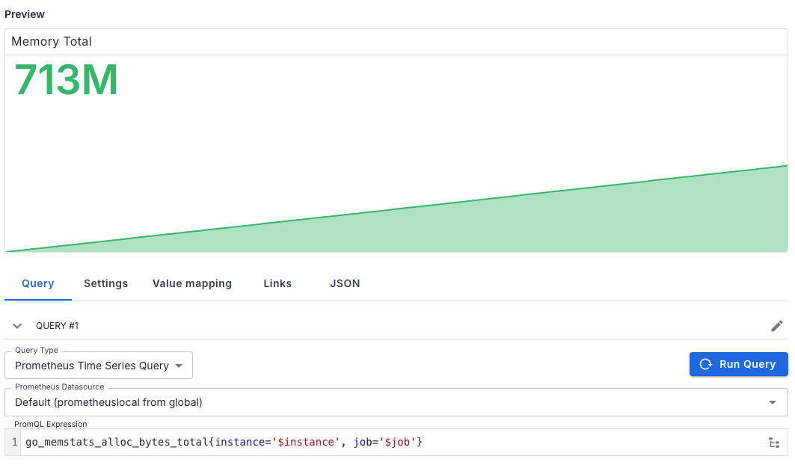
First dashboard - Adjusting new panel settings
Adjust the settings for this stat chart as shown to remove the sparkline, short values, unit,
decimals, and right size the font displayed as shown:
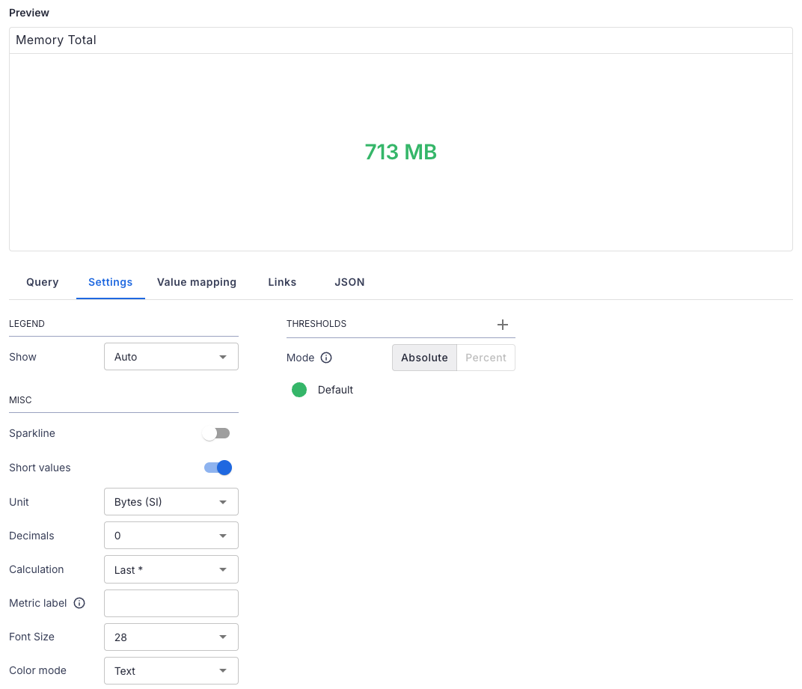
First dashboard - Saving the new panel
To apply the changes to this new panel and add it to the existing dashboard group by clicking on
ADD button at the top. Results in a weird layout:
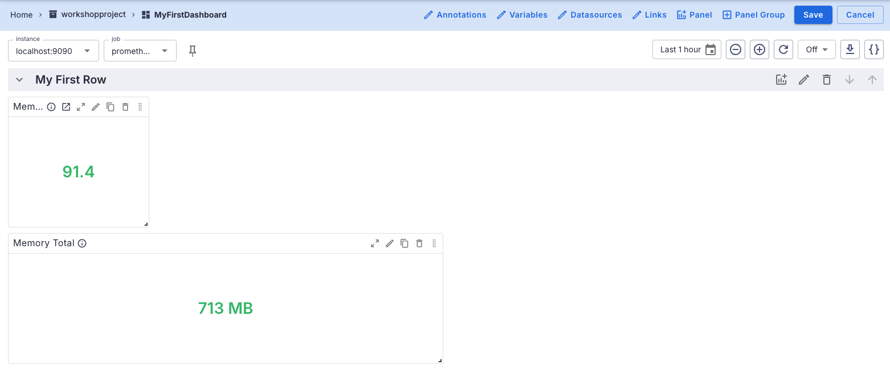
First dashboard - Adjusting memory total location
You can resize the panel using bottom right corner (click and drag), but you can also move the
entire panel around to any location within the group using the
MOVE icon
top right (also click and drag). Try a few location as shown:
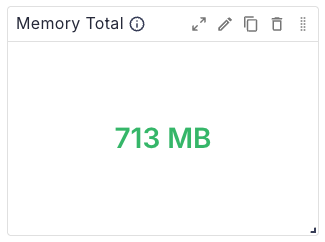
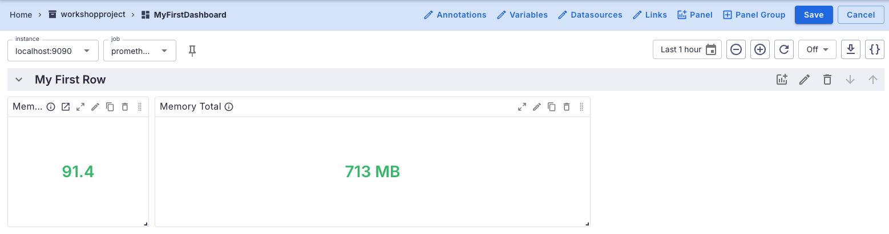
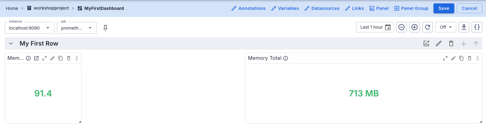
First dashboard - Finalizing the changes made
To finalize you can resize both panels for uniformity, arrange them as shown, and save the
changes using the
SAVE button:
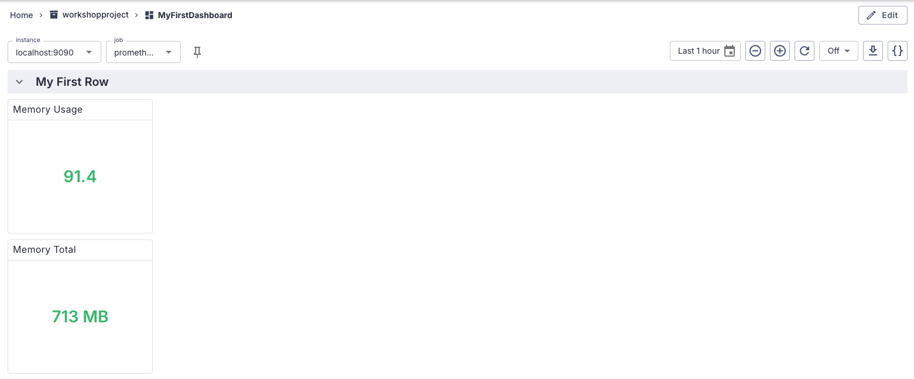
Lab completed - Results
Next up, creating a more advanced dashboard...

Contact - are there any questions?
Eric D. Schabell
Director Evangelism
Contact: @ericschabell {@fosstodon.org) or https://www.schabell.org
Director Evangelism
Contact: @ericschabell {@fosstodon.org) or https://www.schabell.org